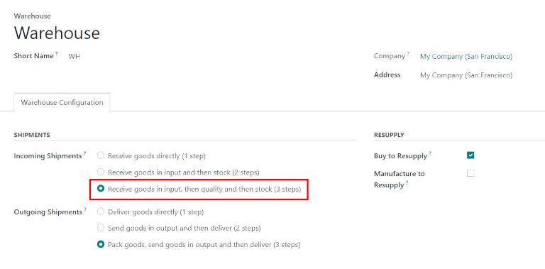
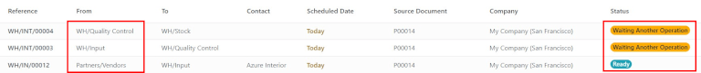

Process receipts in three steps¶
Some companies require a quality control process before receiving goods from suppliers. To accomplish this, Odoo has a three-step process for receiving goods.
In the three-step receipt process, products are received in an input area, then transferred to a quality area for inspection. Products that pass the quality inspection are then transferred into stock. The products are not available for further processing until they are transferred out of the quality area and into stock.
Configuration¶
Odoo is configured by default to receive and deliver goods in one step, so the settings need to be changed in order to utilize three-step receipts. First, make sure the Multi-Step Routes option is enabled in . Note that activating Multi-Step Routes will also activate Storage Locations.

Next, the warehouse needs to be configured for three-step receipts. To do that, go to , and select the desired warehouse to be edited. Doing so reveals the detail form for that specific warehouse.
On that Warehouse detail form page, select Receive goods in input, then quality and then stock (3 steps) for Incoming Shipments.
Activating three-step receipts and deliveries creates two new internal locations: Input (WH/Input), and Quality Control (WH/Quality Control). To rename these locations, go to , then click on the desired location to change (or update) the name.
Receive in three steps (input + quality + stock)¶
Create a purchase order¶
To create a new RfQ, navigate to , which reveals a blank RfQ form page. On this page, select a Vendor, add a storable Product, and click Confirm Order.
A Receipt smart button will appear in the top right, and the receipt will be associated with the purchase order. Clicking on the Receipt smart button will show the receipt order.

Process a receipt¶
One receipt and two internal transfers (one transfer to quality, and a subsequent transfer to stock) will be created once the purchase order is confirmed. To view these transfers, go to .
The status of the receipt transferring the product to the input location will be Ready, since the receipt must be processed before any other operation can occur. The status of the two internal transfers will be Waiting Another Operation, since the transfers cannot be processed until the linked step before each transfer is completed.
The status of the first internal transfer to quality will only change to Ready when the receipt has been marked Done. The status for the second internal transfer to stock will be marked Ready only after the transfer to quality has been marked Done.
The receipt can also be found in the application. In the Overview dashboard, click the 1 To Process smart button in the Receipts kanban card.

Click on the receipt associated with the purchase order, then click Validate to complete the receipt and move the product to the Input Location.

Process a transfer to Quality Control¶
Once the product is in the Input Location, the internal transfer is ready to move the product to Quality Control. In the Overview dashboard, click the 1 To Process smart button in the Internal Transfers kanban card.

Click on the Transfer associated with the purchase order, then click Validate to complete the transfer and move the product to the Quality Control location. Once the transfer is validated, the product is ready for the quality inspection, but is not available for manufacturing or delivery orders.

Process a transfer to stock¶
Once the product is in the Quality Control location, the final internal transfer is ready to move the product to Stock. In the Inventory overview dashboard, click the 1 To Process smart button in the Internal Transfers Kanban card.
Click on the final Transfer associated with the purchase order, then click Validate to complete the transfer and move the product to stock. Once the transfer is validated, the product enters the stock and is available for customer deliveries or manufacturing orders.